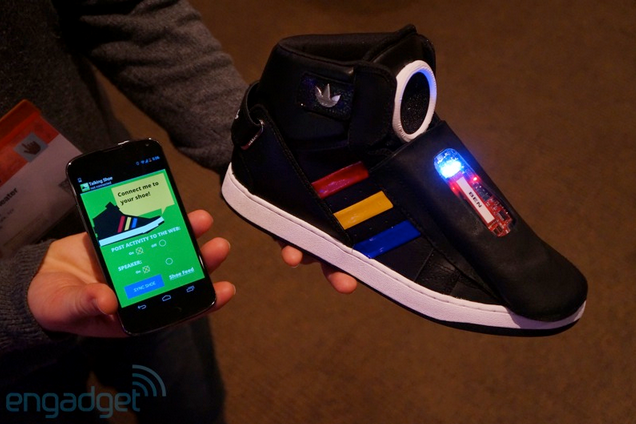

Google''dan akýllý gözlükten sonra akýllý ayakkabý
Google konuþan ayakkabý ile giyilebilir teknolojiye bir yenisini ekledi. Dev þirket Google, akýllý gözlük iþinden sonra þimdi de akýllý ayakkabý iþine girdi. SXSW isimli ayakkabýnýn program adý ise "Art, Copy and Code" olarak belirtilmiþ. Google''ýn SXSW adlý ayakkabýsýnda bir mikro iþlemci ve bir hoparlör bulunuyor. Ayrýca alt sensörlere sahip ayakkabýda bir ivme ölçer ve bir jiroskop bulunuyor. Bluetooth özelliðine sahip ayakkabý akýllý telefonunuza da Bluetooth ile baðlanýyor ve bu þekilde çalýþýyor.
